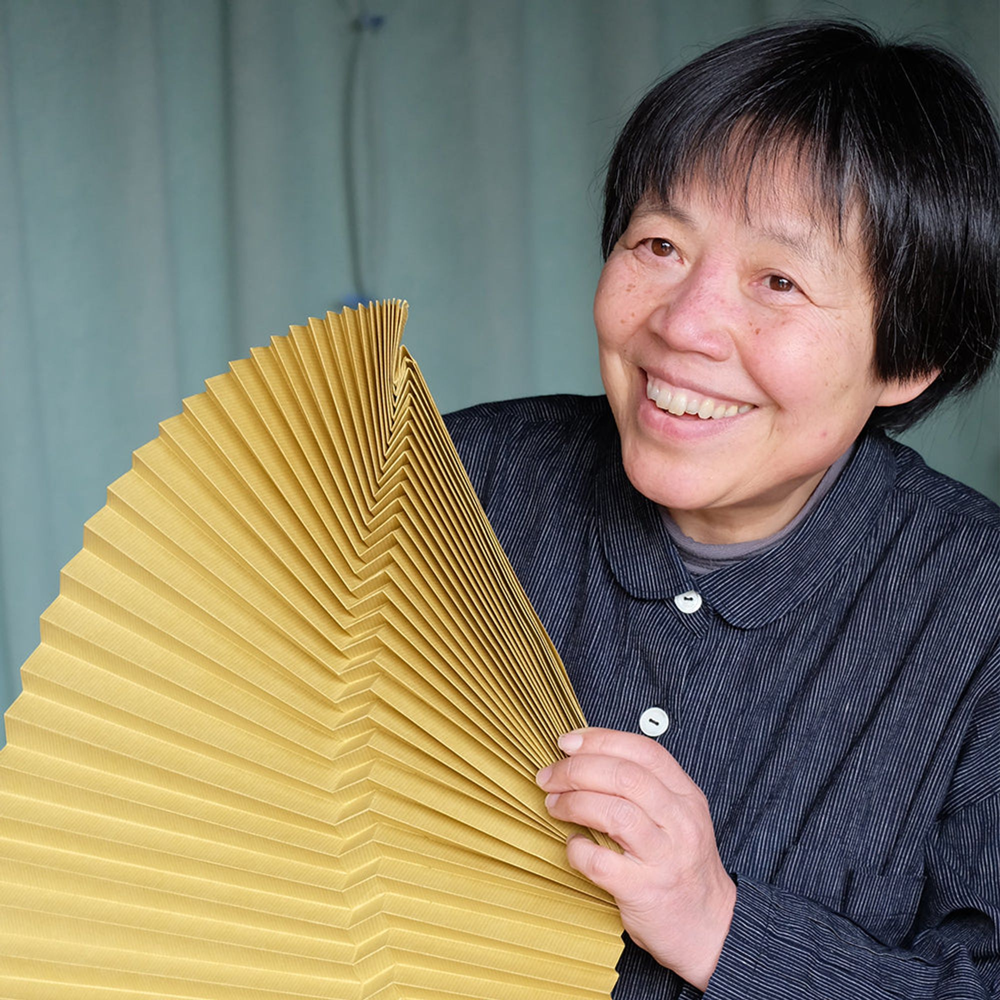

L'origami modulare, ha trovato la sua madrina in Tomoko Fuse, che continua a far conoscere alla comunità origamistica internazionale i risultati dei suoi sforzi, esplorando ogni forma di geometria solida sia reale sia di fantasia con risultati sempre eccezionali.
Tomoko Fuse è un'artista giapponese specializzata nella creazione di origami ed è conosciuta per la progettazione e realizzazione di complessi origami modulari.
Il principio dell'origami modulare è relativamente semplice: ogni foglio s'incastra nel precedente e costituisce al tempo stesso un incastro per il successivo. In pratica, ogni foglio diventa un modulo da unire agli altri. Non c'è limite al numero di moduli: sono note costruzioni con oltre 60.000 moduli.
Nata nella prefettura di Niigata, la Fuse impara l'origami da bambina, mentre si trova in ospedale. All’età di 19 anni studia per due anni e mezzo con il maestro di origami Toyoaki Kawai.
A partire dal 1986 si dedica professionalmente all’origami, specializzandosi nell’origami geometrico e nell’origami modulare, per il quale è molto conosciuta dai cultori della materia a livello internazionale, avendo pubblicato decine di volumi. Tra il 1991 e il 2020 ha esposto in numerose gallerie pubbliche e private, in Europa, Stati Uniti e Brasile, spesso inviata dalla Japan Foundation nell’ambito di iniziative per la promozione della cultura giapponese.
Progetta e realizza paralumi per lampade in carta washi, con i quali ha partecipato anche alla Milano Design Week del 2018 presentando con Denis Guidone un’installazione composita di lampade.
Oltre al formato quadrato tradizionale, sono stati esplorati altri formati come il triangolo equilatero, l'esagono, l'ottagono e vari rettangoli. Nuove forme e tecniche, come il box pleating, sono state sviluppate.